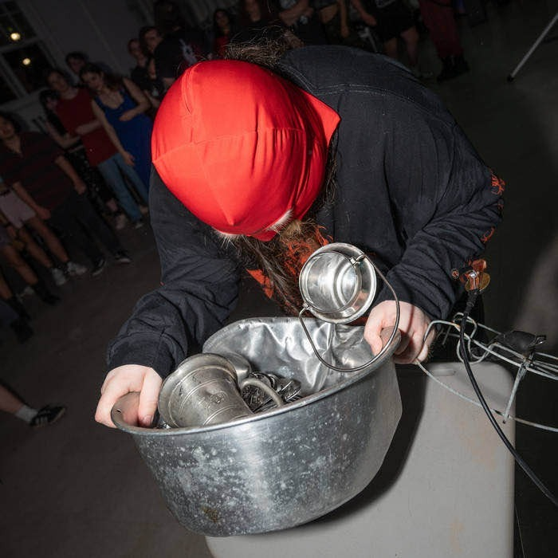

https://chop7times.bandcamp.com
CHOP CHOP CHOP CHOP CHOP CHOP CHOP is a noisegrind artist out of New Haven, CT. Listen to him if you like blast beats and hate cops. He played noise on a stream with Anthony Fantano once.